Para quem nunca jogou2 jogadores20 min14+Edição Galápagos
· Redação Elite Boardgamers
Resumo em 1 minuto
Piloto e Copiloto rolam dados escondidos e, sem falar, alocam um por vez no painel para nivelar o avião, controlar a velocidade e limpar o tráfego; vencem se pousarem em Montreal com tudo pronto na 7ª rodada.
Cada um aloca um dado por vez, em silêncio; todo jogador põe um dado no Eixo e um nos Motores em toda rodada.
O Eixo gira a diferença entre os dois dados, e os Motores somam: abaixo do marco azul o avião não avança, entre os marcos avança 1, acima do alaranjado avança 2.
Para pousar: nenhum avião na esteira, Trens de Pouso e Flapes acionados, Eixo nivelado e Motores abaixo da força dos Freios.
Como você aprende: 3 etapas, da mesa montada à contagem de pontosLeitura do essencial: cerca de 9 min
À vista, só o essencial para jogar. O que abre com + é explicação, exemplo, exercício ou regra de caso especial: abra quando precisar.
Montar a mesa passo a passo
Esta seção segue a preparação do manual p. 3, na mesma ordem, para a partida básica em Montreal.
Uma vez só, ao abrir a caixa. Monte o Painel de Controle: tire e jogue fora as partes marcadas com o símbolo de lixeira, cole os 9 adesivos dupla face nas áreas indicadas, encaixe o disco de Eixo da Aeronave e ponha os 10 Interruptores em cima das luzes verdes p. 2.
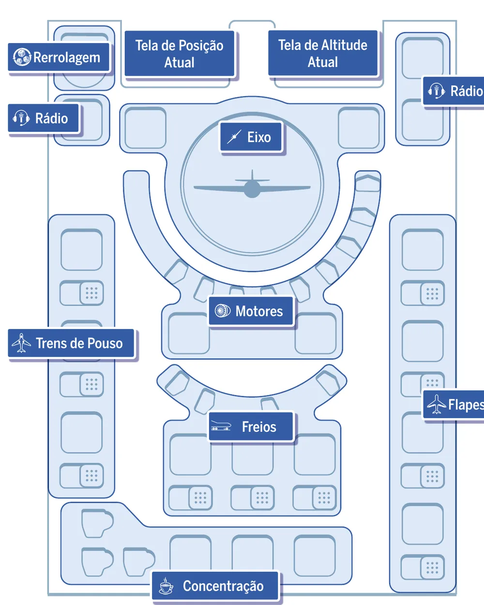
O Painel de Controle com o nome de cada setor: no alto, as telas de Posição Atual e de Altitude Atual; no centro, o Eixo, os Motores e os Freios; nas laterais, os Rádios, os Trens de Pouso (esquerda) e os Flapes (direita); embaixo, a Concentração. Ilustração: manual Galápagos p. 2
Componentes usados na partida
Peça
Quantidade
Para quê
Painel de Controle
1
A cabine, com os espaços onde os dados são alocados p. 2 e 3
Disco de Eixo da Aeronave
1
Mostra se o avião está nivelado p. 3 e 5
Interruptores
10
Deslizam para mostrar a luz verde quando um Trem de Pouso, Flape ou Freio é acionado (p. 3, 7 e 8; nos Freios, ilustração da p. 9)
Marcos de Aerodinâmica
2, azul e alaranjado
Decidem quanto o avião avança p. 3 e 6
Marco de Frenagem
1, vermelho
A força dos Freios p. 3 e 9
Dados
4 azuis e 4 alaranjados
Do Piloto e do Copiloto p. 3
Esteira de Altitude
1, lado verde e amarelo
As 7 rodadas, de 6.000 pés ao pouso p. 3 e 9
Esteira de Aproximação YUL Montréal-Trudeau
1
O caminho até o aeroporto p. 3
Fichas de Rerrolagem
2
Permitem rolar dados de novo p. 3 e 4
Peças de Avião
12
O tráfego no caminho p. 3 e 7
Peças de Café
3
Mudam um dado em 1 p. 3 e 8
Escudos
2
Escondem os dados; por dentro, lembretes p. 3
O que muda com o número de jogadores. Nada: Sky Team é para exatamente 2 pessoas, o Piloto e o Copiloto p. 1 e 3. O manual não traz partida para mais gente nem solo.
Passo a passo
Ponha o Painel de Controle entre os dois jogadores, de preferência sentados lado a lado. A seta do disco de Eixo aponta para o triângulo preto do alto, e todos os Interruptores tampam as luzes verdes p. 3.
No Velocímetro, o arco de números em volta do Eixo, ponha o marco de Aerodinâmica azul entre o 4 e o 5 e o alaranjado entre o 8 e o 9 p. 3.
Ponha o marco de Frenagem à esquerda do 2 na trilha de Frenagem, o arco menor abaixo dos Motores p. 3.
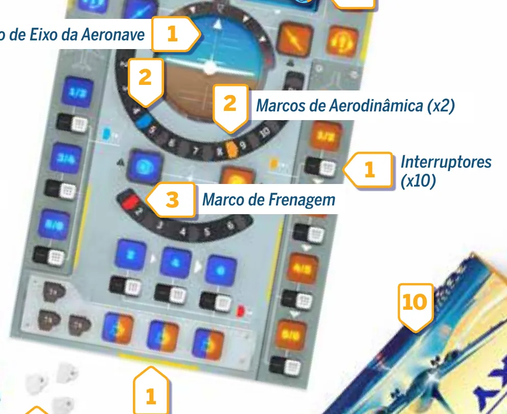
O painel preparado: o disco de Eixo nivelado, no alto; os marcos de Aerodinâmica, azul entre 4 e 5 e alaranjado entre 8 e 9; o marco de Frenagem, vermelho, antes do 2; os Interruptores tampando as luzes, embaixo de cada espaço. Os números na figura são os passos do manual, que usa o 1 tanto para o painel e o disco quanto para os Interruptores. Ilustração: manual Galápagos p. 3
Escolham os papéis. Quem senta do lado azul do painel é o Piloto e pega os 4 dados azuis; quem senta do lado alaranjado é o Copiloto e pega os 4 alaranjados p. 3. Na ilustração, olhando o painel de frente, o lado azul (Trens de Pouso) fica à esquerda: o Piloto senta à esquerda, o Copiloto à direita p. 2 e 3.
Encaixe a Esteira de Altitude, lado verde e amarelo para cima, na fenda do canto superior direito do painel, e deslize-a até aparecer 6.000 na tela: é a Altitude Atual, em pés p. 3.
Encaixe a Esteira de Aproximação de Montreal na fenda do canto superior esquerdo do painel (acima do estoque de Rerrolagem, o círculo cinza ao lado da tela) e deslize-a até aparecer a nuvem na tela: é a Posição Atual do avião p. 3.
Ponha uma ficha de Rerrolagem em cada ícone de Rerrolagem da Esteira de Altitude; na ilustração, no 6.000 e no 2.000 p. 3.
Ponha uma peça de Avião em cada ícone de Tráfego da Esteira de Aproximação p. 3. Na ilustração, Montreal recebe 9 aviões e sobram 3.
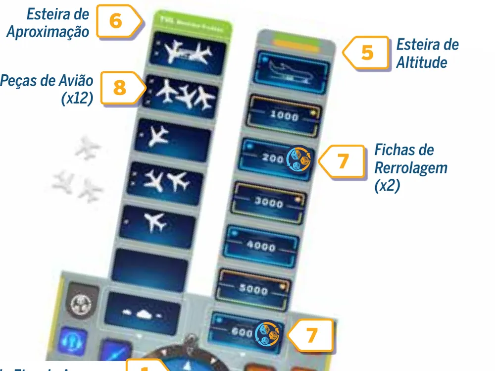
As esteiras preparadas: a de Aproximação (6), com as peças de Avião (8) e a nuvem na tela; a de Altitude (5), em 6.000, com as fichas de Rerrolagem (7) no 6.000 e no 2.000. Ilustração: manual Galápagos p. 3
Forme a reserva de Café ao lado do painel, fora dele p. 3.
Dê um escudo a cada jogador e leiam os lembretes de dentro p. 3.
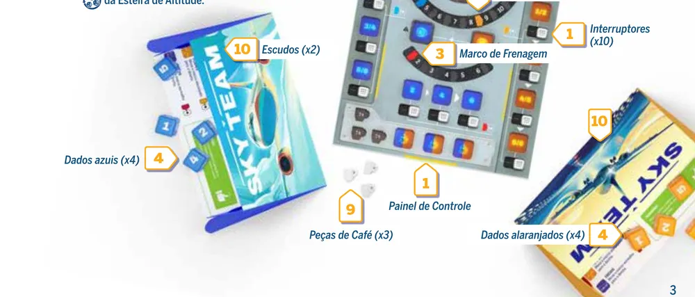
A parte de baixo da mesa: escudo e dados azuis do Piloto (10 e 4), o Café em reserva fora do painel (9) e os dados alaranjados do Copiloto (4). Ilustração: manual Galápagos p. 3O conteúdo da caixa em foto da editora, edição em inglês, com dados já no painel e peças dos módulos avançados. Não é a montagem da partida básica: nela, os dados começam atrás dos escudos e os módulos ficam guardados. Imagem: Le Scorpion Masqué
O que fica na caixa. O que a preparação não cita: os componentes do compartimento fechado, que são dos módulos avançados e ficam "exatamente onde estão" p. 3, e o Diário de Bordo, que só se abre depois de pousar em Montreal (p. 11; Diário de Bordo, p. 1).
Quem começa. Uma seta na tela de Altitude Atual mostra quem aloca o primeiro dado de cada rodada; na primeira, a 6.000 pés, é o Piloto p. 4. Na ilustração da esteira, a marca alterna de lado: o Piloto abre no 6.000, 4.000, 2.000 e na rodada do pouso; o Copiloto, no 5.000, 3.000 e 1.000 p. 3. Na dúvida, olhe a seta.
Antes de começar, confira: Eixo nivelado e Interruptores nas luzes; marcos azul (4 e 5), alaranjado (8 e 9) e de Frenagem (antes do 2); Altitude em 6.000 com as fichas de Rerrolagem; Aproximação na nuvem, um avião por ícone de Tráfego; Café na reserva; 4 dados e um escudo para cada um.
Onde ficam as peças de Café no começo da partida?
O Café começa todo na reserva. Ele só entra no painel quando alguém aloca um dado na Concentração p. 3 e 8.
Comece a jogar em 4 minutos
Imagem: Le Scorpion Masqué
Meta: em 4 minutos de leitura, montar a mesa e jogar a primeira rodada sem abrir o manual.
A ideia do jogo
Vocês dois são a tripulação de um avião e precisam pousá-lo em 7 rodadas. Em cada uma, cada jogador rola 4 dados escondido e, em silêncio, aloca um dado por vez no Painel de Controle. Todo jogador precisa pôr um dado no Eixo, que mantém o avião nivelado, e um nos Motores, que decidem quanto ele avança, em toda rodada. Os outros espaços abrem caminho e preparam o pouso; os Freios, por exemplo, empurram o marco de Frenagem, e a posição dele é a força dos Freios p. 1, 4, 5 e 9.
Monte a mesa
A montagem completa, com figuras, está em Montar a mesa passo a passo, no alto da página. O essencial:
Painel entre os dois, Eixo nivelado, marcos nas posições iniciais p. 3.
Altitude em 6.000; Aproximação de Montreal na nuvem, com os aviões p. 3.
Piloto com os dados azuis, Copiloto com os alaranjados, um escudo para cada p. 3.
Seu primeiro turno
Conversem sobre a estratégia, sem falar de números de dado p. 4.
Cada um rola os 4 dados atrás do escudo. Daí em diante, silêncio até o fim da rodada p. 4.
A ficha de Rerrolagem do 6.000 vai para o estoque do painel p. 4.
Alternem um dado por vez, a começar por quem a seta da Altitude indicar (no 6.000, o Piloto), até os 8 estarem no painel. Cada dado vai num espaço vazio da sua cor (ou das duas cores) que aceite o número. A Concentração, embaixo, aceita qualquer dado p. 4 e 8.
Eixo: com os dois dados lá, gire o disco a diferença entre eles, para o lado de quem pôs o maior p. 5.
Motores: com os dois dados lá, some. Abaixo do marco azul, o avião não avança; entre os marcos, avança 1 espaço; acima do alaranjado, 2 p. 6.
Fim da rodada: a Esteira de Altitude desce um espaço e cada um pega seus dados p. 9.
Ainda não precisa saber
As regras completas do Rádio, dos Trens de Pouso, dos Flapes, da Concentração e do Café (o exemplo acima só mostra o efeito): etapa 2. Freios, última rodada e chegada cedo ou tarde: etapa 3. Rerrolagem e as derrotas do Eixo e dos Motores: etapa 1.
Como a partida acaba
Na última rodada, com o aeroporto na tela de Posição Atual e o avião na de Altitude, vocês vencem se a esteira estiver sem aviões, todos os Trens de Pouso e Flapes estiverem verdes, o Eixo estiver nivelado e a soma dos Motores for menor que a força dos Freios p. 10 e 11.
Prefere ver? Partida resumida do canal Duque Board Games. Ele complementa este guia; em caso de diferença, vale o manual.
SKY TEAM - Gameplay resumida, canal Duque Board Games · abrir no YouTube
0Antes de tudo: o que é este jogoOpcional
Imagem: Le Scorpion MasquéAbrir esta seção
Sky Team é cooperativo e só para dois: a dupla ganha ou perde junta. Cada partida é uma aproximação em 7 rodadas, de 6.000 pés até o chão p. 4 e 9. O avião desce sozinho; vocês controlam quanto ele avança, se fica nivelado, se o caminho está livre e se chega pronto para pousar.
Duas ideias sustentam o resto. Cada dado é uma ação e um recado: depois da rolagem ninguém fala p. 4, e um dado no Eixo também é um recado ao parceiro p. 12. O avião não espera: a altitude cai toda rodada, e o aeroporto precisa aparecer na tela quando o avião chega ao chão p. 9 e 10.
1Como este guia ensinaOpcional
Imagem: Le Scorpion MasquéAbrir esta seção
Três etapas, cada uma uma parte real do voo: a rodada com Eixo e Motores; limpar o caminho e preparar o avião; pousar. Cada etapa traz Para entender (o porquê), Passo a passo (a regra exata), um exemplo resolvido, uma tarefa para completar e uma sua vez, sem ajuda; casos especiais ficam em blocos de regra adicional. Toque numa opção para ver a resposta. No fim, uma avaliação diz o que reler, e uma folha de consulta vai para a mesa.
2Etapa 1: a rodada, o Eixo e os Motores
Por que funciona assim
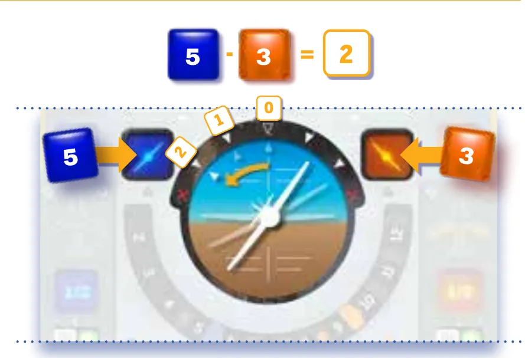
O Eixo no manual: o Piloto aloca 5 e o Copiloto 3; diferença 2, e o disco gira dois pontos para o lado do Piloto. As marcas 0, 1 e 2 mostram a contagem; depois do 2 vem o X do parafuso. Ilustração: manual Galápagos p. 5
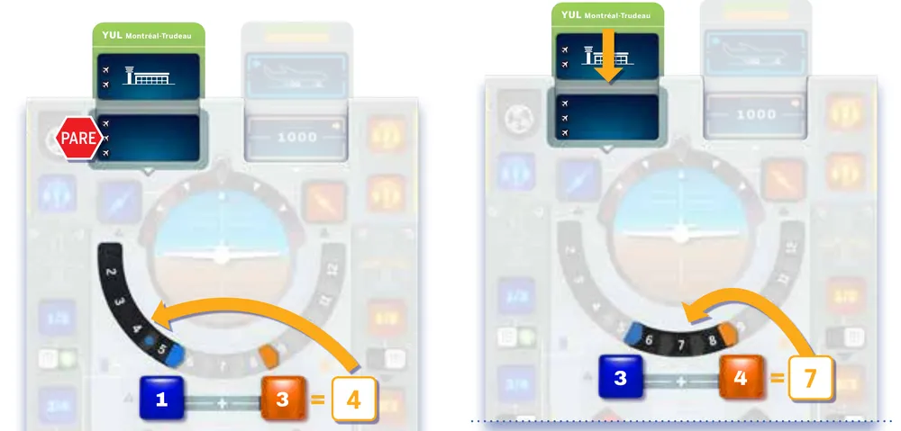
Os Motores no manual: à esquerda, 1 + 3 = 4, abaixo do marco azul, e a esteira não se move; à direita, 3 + 4 = 7, entre os marcos, e a esteira desce 1 espaço. Ilustração: manual Galápagos p. 6Regra adicional: RerrolagemSobre a ediçãoVer um exemplo resolvidoPratique esta etapa: exercícios com respostas
3Etapa 2: limpar o caminho e preparar o avião
Por que funciona assim
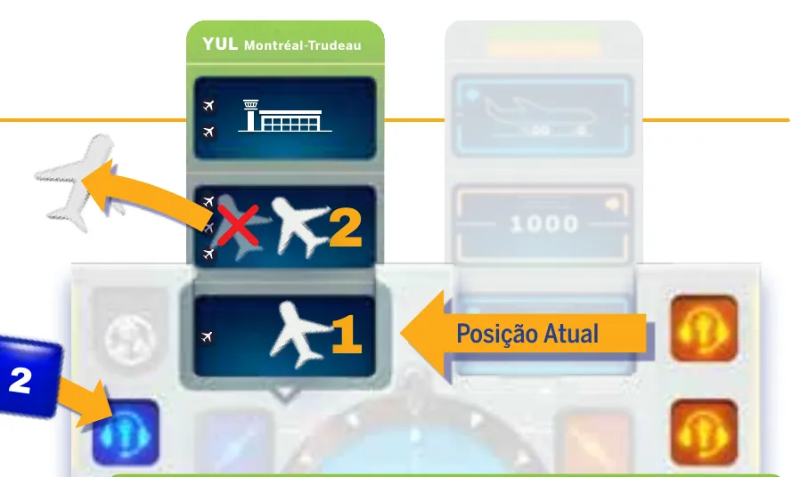
O Rádio no manual: o Piloto aloca um 2 e tira o avião do segundo espaço da esteira, um à frente da Posição Atual. Ilustração: manual Galápagos p. 7
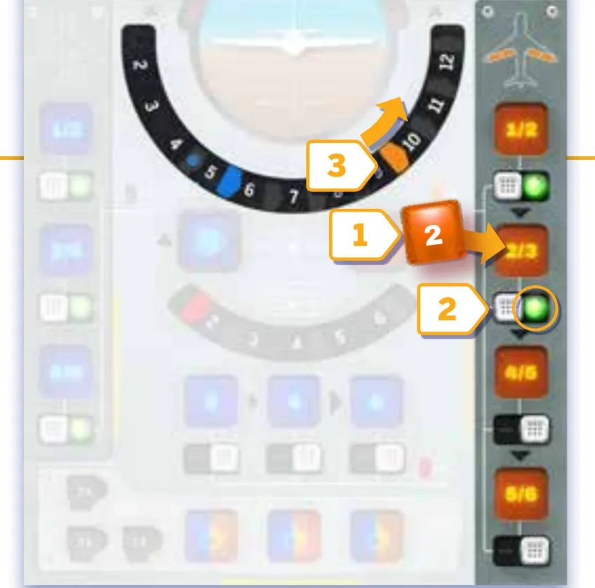
Os Flapes no manual: o Copiloto aloca um 2 no segundo Flape (2/3), o Interruptor mostra a luz verde e o marco alaranjado vai para entre o 10 e o 11. Ilustração: manual Galápagos p. 8
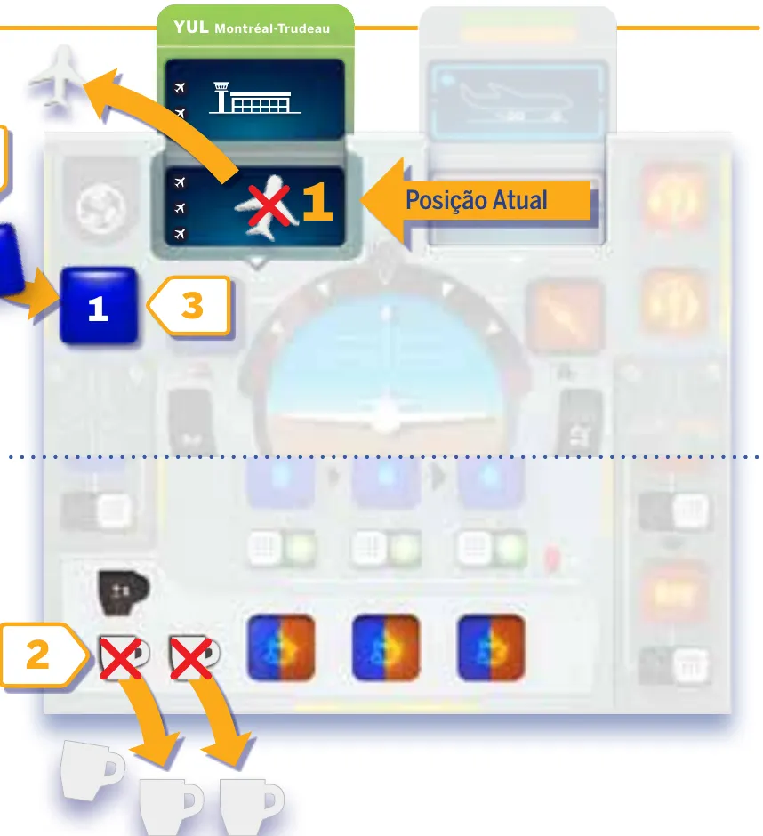
O Café no manual: o Piloto tem um 3, gasta 2 Cafés, transforma o dado em 1 e o aloca no Rádio, tirando o avião da Posição Atual. Ilustração: manual Galápagos p. 8Regra adicional: Limites do CaféRegra adicional: Espaço já acionadoSobre a edição: Flapes e Freios já acionados; Rádio além da esteiraSobre a edição: Avançar 2 com tráfego no caminhoVer um exemplo resolvidoPratique esta etapa: exercícios com respostas
4Etapa 3: frear e pousar
Por que funciona assim
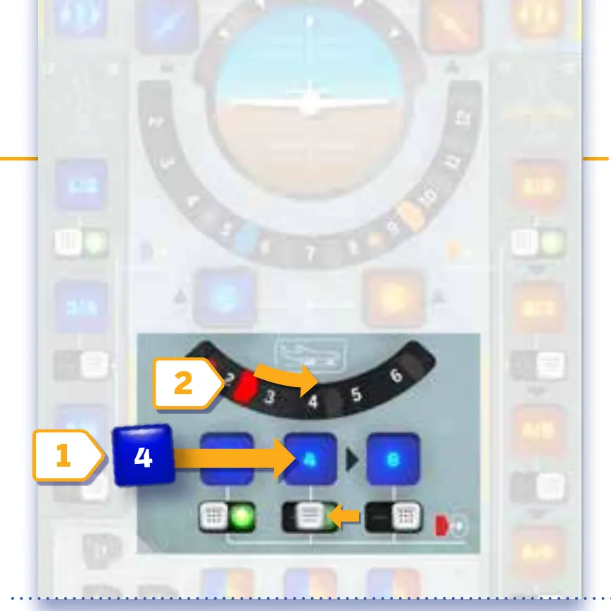
Os Freios no manual: o Piloto aciona o segundo Freio com um 4, o Interruptor desliza para mostrar a luz verde e o marco de Frenagem vai para entre o 4 e o 5. Ilustração: manual Galápagos p. 9
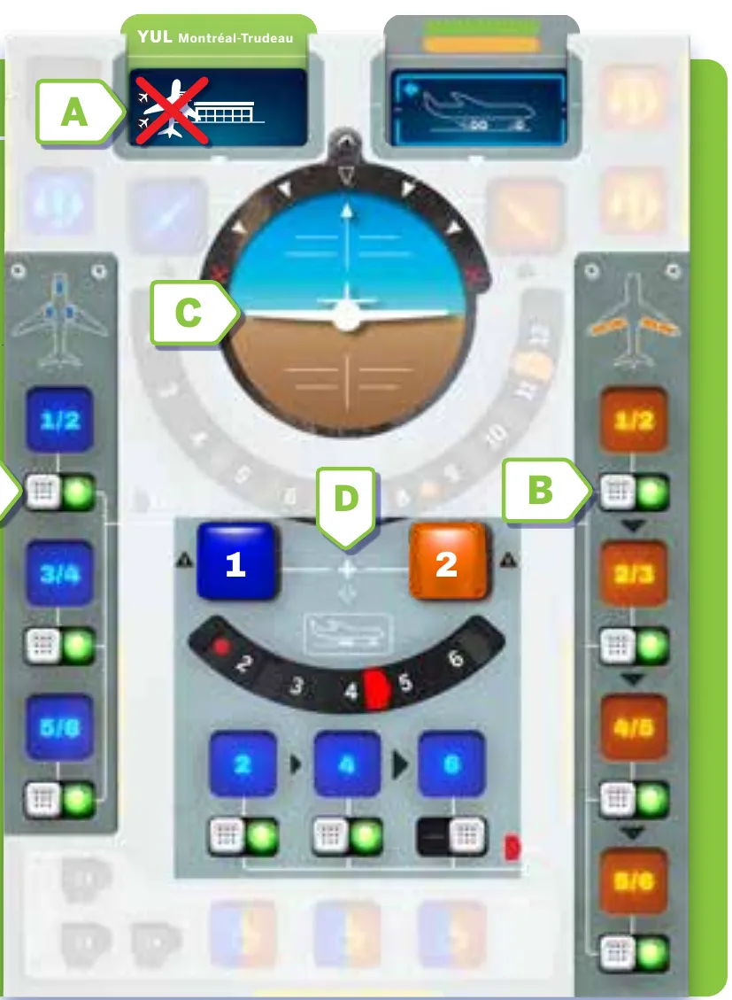
Pouso com vitória: (A) o avião riscado no aeroporto: nenhuma peça pode sobrar na esteira; (B) Trens de Pouso e Flapes verdes; (C) Eixo nivelado; (D) Motores com 1 + 2 = 3, abaixo do marco de Frenagem, entre 4 e 5. Ilustração: manual Galápagos p. 11Regra adicional: Chegar cedo demaisRegra adicional: Ultrapassagem do aeroportoRegra adicional: Não chegar a tempoVer um exemplo resolvido
Depois de Montreal: o Diário de Bordo
Depois de pousar em Montreal, abra o Diário de Bordo p. 11: 21 cenários em 11 aeroportos, em quatro cores de dificuldade, de Pouso Rotineiro a Pouso Heroico (Diário de Bordo, p. 2 e 6 a 8; página oficial). A preparação é a desta página, com quatro trocas: a Esteira de Aproximação do aeroporto do cenário, que pode ser mais longa ou mais curta; a Esteira de Altitude do lado da mesma cor; os módulos que o cenário indica; e, em alguns cenários, cartas de Habilidade Especial (Diário de Bordo, p. 2). Cada módulo tem preparação e regras próprias no Diário de Bordo, lidas quando o cenário pede: Dado de Tráfego e Curvas (marcados em algumas esteiras), Querosene, Estagiário, Vento, Tempo Real, Perda de Querosene e Freios para Gelo (Diário de Bordo, p. 3 a 5). O resto segue esta página.
Pratique esta etapa: exercícios com respostas
5Situações especiaisOpcional
Imagem: Le Scorpion MasquéAbrir esta seçãoSobre a edição: O que vem das ilustraçõesDica
6Avaliação finalOpcional
Imagem: Le Scorpion MasquéAbrir esta seção
Responda sem consultar. Cada resposta diz o que reler.
1. No fim de uma rodada, o Copiloto não pôs dado nos Motores. O que acontece?
Derrota. Eixo e Motores precisam de um dado de cada cor em toda rodada p. 5. Releia a etapa 1.
2. Eixo nivelado. O Piloto põe 6 e o Copiloto, 2. O que acontece?
Parafuso. A diferença 4 vai para o lado do maior dado, e o X fica logo depois da marca 2 p. 5. Releia a etapa 1.
3. Dois Flapes estendidos (marco alaranjado entre 10 e 11). Motores com 5 e 5. Quanto o avião avança?
1 espaço. A soma 10 fica entre os marcos p. 6 e 8. Releia a etapa 2.
4. Há um avião na Posição Atual e os Motores mandam avançar 1. O que acontece?
Colisãop. 6. Releia a etapa 2.
5. Última rodada, só o Freio 2 acionado. Motores com 1 e 1. A condição dos Freios está cumprida?
Simp. 9 e 10. Releia a etapa 3.
6. O avião aparece na tela de Altitude e o aeroporto ainda não está na Posição Atual. O que acontece?
Derrota, o caso "Não Chegar ao Aeroporto a Tempo" p. 10. Releia a etapa 3.
7Para consultar durante a partida
Imagem: Le Scorpion Masqué
Preparação (Montreal): Eixo nivelado; Interruptores nas luzes; marco azul 4 e 5, alaranjado 8 e 9, Frenagem antes do 2; Altitude 6.000 e Rerrolagem nos ícones; Aproximação na nuvem, um avião por ícone de Tráfego; Café na reserva; Piloto azul, Copiloto alaranjado.
A rodada: 1. discussão, sem falar de dados; 2. rolar atrás do escudo e silêncio; 3. Rerrolagem da Altitude Atual para o estoque; 4. um dado por vez, a partir de quem a seta indica; 5. Esteira de Altitude desce um espaço, dados de volta, conferir as telas.
Espaço
Quem
Dado
Efeito
Eixo (obrigatório)
um de cada
qualquer
Gira a diferença para o lado do maior; o X é parafuso
Motores (obrigatório)
um de cada
qualquer
Soma: abaixo do azul 0, entre os marcos 1, acima do alaranjado 2; na última rodada, compare com os Freios
Rádio
Piloto 1, Copiloto 2
qualquer
Tira 1 avião do espaço igual ao dado, contando a Posição Atual como 1
Trens de Pouso
Piloto
1/2, 3/4, 5/6, qualquer ordem
Luz verde; marco azul +1
Flapes
Copiloto
1/2, 2/3, 4/5, 5/6, em sequência
Luz verde; marco alaranjado +1
Freios
Piloto
2, 4, 6, em sequência
Luz verde; marco de Frenagem +1 (antes do 2, entre 2 e 3, entre 4 e 5, além do 6)
Concentração
qualquer um
qualquer
+1 Café no painel (máximo 3); cada Café muda um dado em 1, entre 1 e 6
Derrotas na hora: falta de dado de cada cor no Eixo ou nos Motores no fim da rodada; Eixo no X; avançar com avião na Posição Atual; avançar com o aeroporto na Posição Atual; avião na Altitude sem o aeroporto na Posição Atual.
Vitória, no fim da última rodada: esteira sem aviões; Trens de Pouso e Flapes verdes; Eixo nivelado; Motores menores que os Freios.
Sky Team, Diário de Bordo, Galápagos, no mesmo arquivo (SKT001_diario-de-bordo_v1.0.pdf), 8 páginas, consultado em 08/11/2026 para a preparação dos cenários e a lista de módulos.
Vídeo: "SKY TEAM - Gameplay resumida", canal Duque Board Games, https://www.youtube.com/watch?v=KVr1v6zZkos (título e canal pelo oEmbed do YouTube), consultado em 08/11/2026.
Regras conferidas no livreto "Procedimento de Pouso" da edição brasileira de Sky Team (Galápagos, código SKT001, versão 1.0, tradução de Maria do Carmo), baixado da biblioteca de downloads da Asmodee Brasil. O jogo é de Luc Rémond, da Le Scorpion Masqué. O guia ensina o primeiro aeroporto, Montreal-Trudeau, como o manual recomenda, e diz no fim como entram os outros, que estão no segundo livreto da caixa, o Diário de Bordo. As páginas citadas são as do livreto de regras, de 1 (capa) a 12.